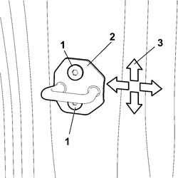

7010A10 REAR SIDE DOOR - ADJUST STRIKER AND ADAPT SEAL IF NECESSARY
- Path
- Procedures > 70 FITTINGS > 7010 PASSENGER COMPARTMENT REAR SIDE DOORS > 7010A REAR SIDE DOOR ASSEMBLY > 7010A10 REAR SIDE DOOR - ADJUST STRIKER AND ADAPT SEAL IF NECESSARY
- Kind
- repair procedure (removal / refitting; the operation number is the code)
- Applies to
- all engines; all production periods
- Interactive page
- https://sloeber94.github.io/elrnDB-fCrm/en/#/194000893
Applies to: all engines; all production periods
- Open the rear side door.
1. Loosen the bolts fixing the striker.
2. Move the striker into the correct position making use of the slotted opening in the bodyshell pillar, checking that it is perfectly aligned with the front door lock.
3. The arrows indicate the possible movements for the adjustment.

Applies to: all engines; all production periods
- When the adjustment has been completed, tighten the bolts fixing the door striker to torque.
Component | Fastening | dia | Value (daNm) | Validity |
|---|---|---|---|---|
FRONT AND REAR DOOR STRIKER WITH OUTER PANEL AND INTERMEDIATE PILLAR REINFORCEMENT | Bolt | M8 | 2,88 ÷ 3,52 |